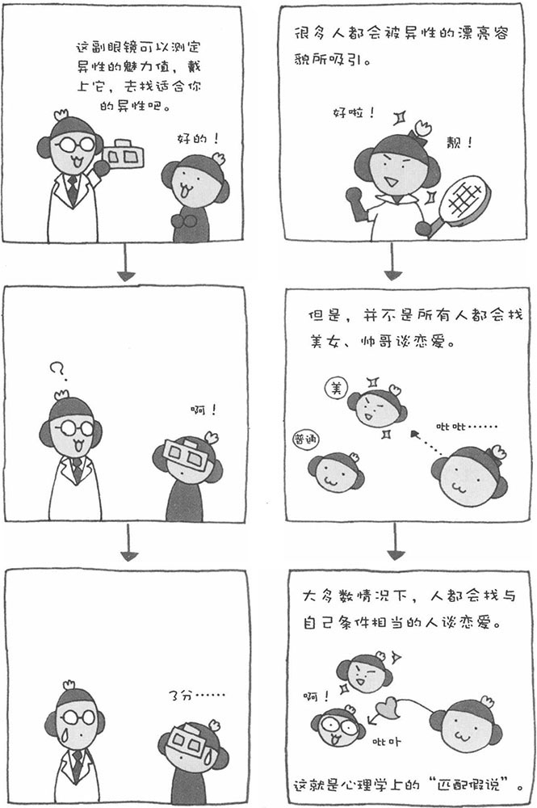
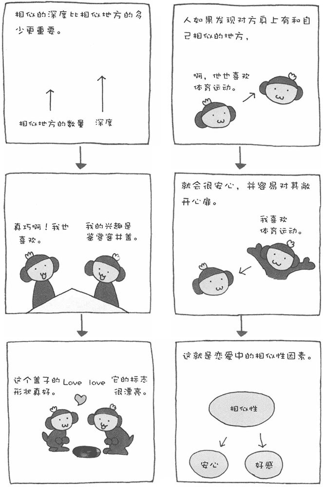
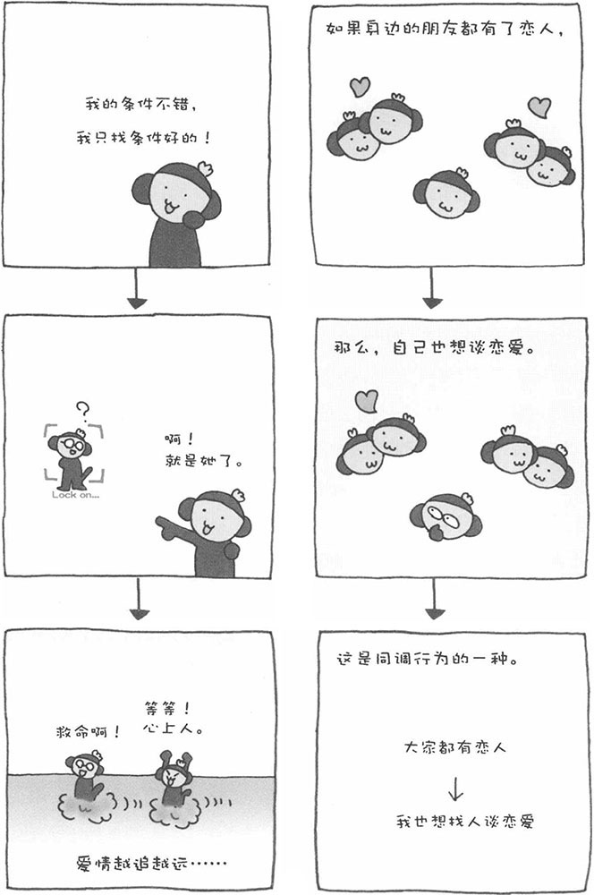

没有爱情滋养的人生，是灰暗的人生。爱情对于一个人来说，是非常重要的。可是，人在恋爱时，究竟是被对方的什么所吸引呢？人为什么会喜欢另外一个人呢？
韩国热播电视剧《冬季恋歌》中有一句台词非常耐人寻味。民亨问玉真到底喜欢尚赫哪一点，结果玉真列举了尚赫的种种优点。民亨听后笑了，他说玉真喜欢尚赫的地方太多了，其实喜欢一个人时，不需要什么理由。
不过，真的是这样吗？心理学上认为，人喜欢另一个人是有原因的，并对此进行了各种各样的研究。心理学家研究出来的恋爱理由，不仅多而且很复杂。这里给大家举几个具有代表性的恋爱理由。对方的哪个方面对自己的吸引力最大？自己是什么时候坠入情网的？您不妨回忆一下自己的恋爱经历，分析一下自己的恋爱理由，其实非常有趣。
1、对方身体的魅力
所谓身体的魅力，简单地说就是一个人容貌和身姿的魅力。您肯定认为这是理所当然的，因为大家都喜欢漂亮的异性。心理学的很多实验也证明，身体魅力高的人更容易获得异性的青睐。不过，并不是所有身体魅力高的人都会成为自己的恋爱对象。
在大多数情况下，人都愿意找与自己身体魅力相当的人谈恋爱。虽然大家都向往与身体魅力高的谈恋爱，但是如果对方的身体魅力高出自己太多的话，我们自己首先就会打起退堂鼓，心想："对方的容貌太出众了，我配不上他（她），而且如果我开口的话，肯定会遭到拒绝"。于是，人在大多数情况下都会找与自己条件差不多的异性谈恋爱。心理学将这种心理称为"匹配假说"。

2、与自己行为模式相似的异性
曾经有一对陌生男女，在家用电器卖场的电视机专柜前被同一个电视节目所吸引。当他们发现对方和自己喜欢同一个节目时，互相产生了好感，后来竟然成了情侣。
当人的价值观、金钱观、喜好等相似的时候，容易相互产生好感。人的态度、行为模式的相似性越高，就越容易喜欢对方，这是使人们陷入爱情的"相似性原因"。反之，情趣爱好、行为模式相差很远的两个人，也很难发展恋情。美国心理学家经调查发现，即使一对情侣都喜欢体育运动，如果各自喜欢的项目不同，他们最终也不容易走向婚礼的殿堂。
如果对方比自己稍微优秀一点，即自己对对方充满了尊敬的话，那么相似性的效果会加强，自己更容易喜欢上对方。如果两个人相似性比较多，在谈话中能够找到共同的乐趣，那么人的认知会达到一种平衡的状态。如果这种状态能保持下去，互相之间也会产生好感。
3、对性格的喜好
性格，也是我们寻找恋爱对象时一个重要的衡量因素。简单地说，任何人都喜欢找一位性格好的异性做自己的伴侣。可是，到底哪种性格算是好性格呢？对性格的喜好存在较大的个人差异，所以不能一概而论。
美国学者安德森曾进做过一项调查，研究人们喜欢哪种性格。他准备了555个形容性格特性的词语，然后请100名大学生为这些词语评分，评分标准分0～6七个等级。结果表明，得分较高的有"诚实"、"正直"、"善解人意"、"忠实"、"可以信赖"、"理性"、"可靠"和"心胸宽广"等，而得分较低的有"爱撒谎"、"卑鄙下流"等。

4、了解对方心情
在情侣分手时，我们经常能听到这样一句话：我根本就不了解你在想什么！反过来看，也就是说，彼此了解对方的心情，对两个人的恋爱关系是非常关键的。当然，在恋爱开始时，了解对方喜欢自己的心情，也是非常重要的。对于喜欢自己的人，人有一种容易喜欢上他（她）的倾向。这叫做"好感的回报性"，即接受了爱情，我们也想用爱情回报对方。
5、自己的心理状态
当有一位漂亮、可爱的异性出现在自己面前时，我们不一定会喜欢上对方。自己当时的心理状态也很重要。在一定的兴奋状态下（比如心情很好的时候），人就有种想找个人谈恋爱的冲动。想找个人陪的心情叫做"亲和欲求"，当人情绪不安的时候，亲和欲求就会高涨起来。
6、社会背景、周围背景
当孩子们进入高中或考上大学之后，会发现身边的朋友都开始谈恋爱了。在这样的环境中，自己也想找个人谈恋爱。这也是同调行为的一种体现。当周围朋友中谈恋爱的人数逐渐增多时，人的同调行为会逐渐转变成一种强迫观念，认为自己不谈恋爱不行。结果，降低了自己对恋爱对象的理想或标准，于是很容易就恋爱了。
